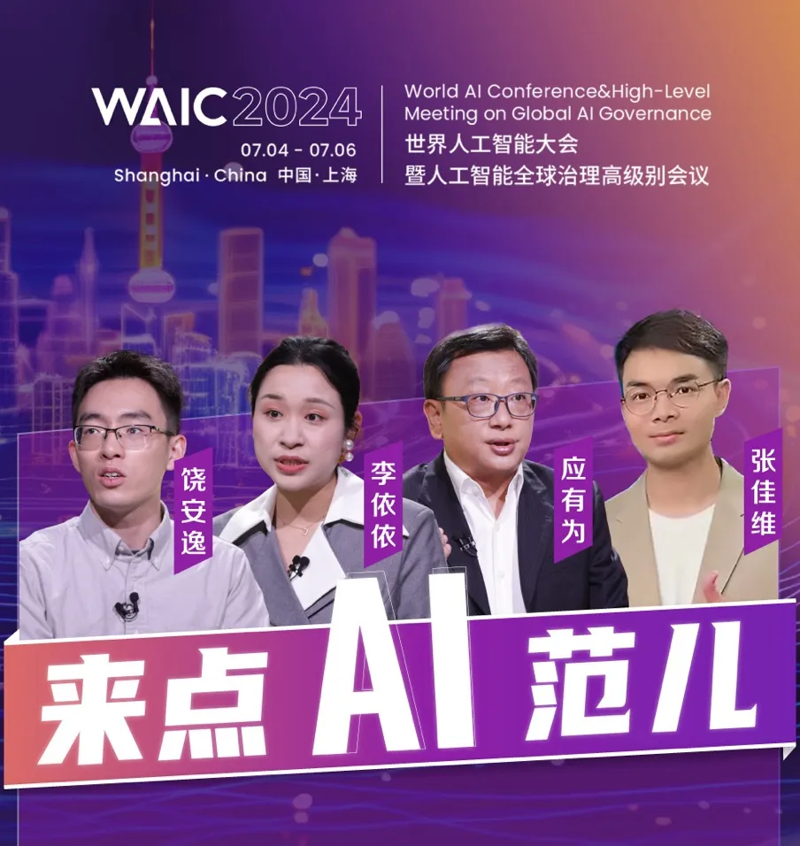
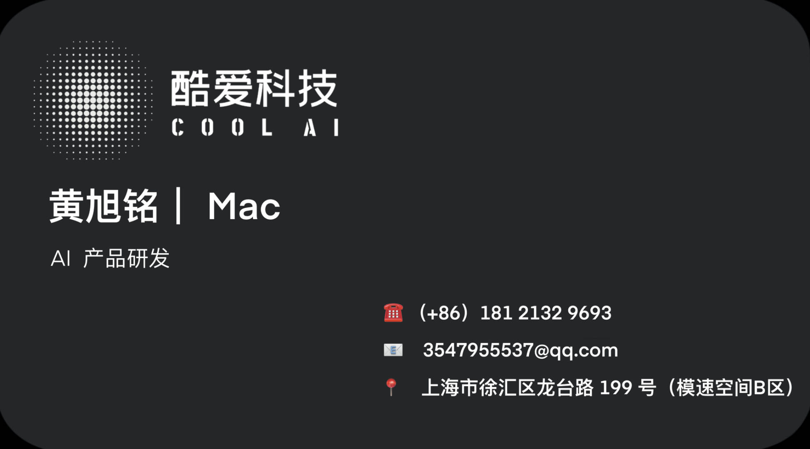

Last week, I had the incredible opportunity to intern at CoolAI, where I was tasked with developing AI products.
My main responsibilities included preparing a demo and materials for an interview with China Business Network (CBN) and representing CoolAI at the World Artificial Intelligence Conference (WAIC).
During the conference, I introduced our company's core business and provided detailed explanations of our products.
CBN Interview
In preparing for the interview with CBN, I meticulously worked on creating a comprehensive demo showcasing our latest AI innovations.
This task required not only technical proficiency but also the ability to communicate complex ideas clearly and engagingly. The process was both challenging and rewarding, as it allowed me to refine my workflow skills and deepen my understanding of our AI solutions.
WAIC

At WAIC, I took on the role of a promoter, presenting CoolAI's cutting-edge technologies to a diverse audience. This experience was truly eye-opening.
I was struck by the level of interest and enthusiasm from attendees, which included professionals from hundreds of internet corporations and numerous AI enthusiasts. Engaging with such a vibrant community reinforced my passion for AI and highlighted the immense potential and rapid growth of the field.
The opening of WAIC was particularly enlightening.
The scale of the conference and the breadth of innovations on display were overwhelming. Witnessing firsthand the thriving nature of the AI industry and its promising future was inspiring.
The conference underscored the rapid advancements being made and the potential for AI to transform various sectors. This realization has only solidified my ambition and dedication to pursue a career in AI.
Reflection
Reflecting on my week-long internship, I realized there is a significant difference between academic learning and professional work.
While my studies have provided a solid theoretical foundation, the hands-on experience of working on a real-world project brought a new sense of accomplishment. The project was demanding and exhausting, yet incredibly fulfilling.
It offered a taste of the challenges and rewards that come with working in the tech industry.
Conclusion
My internship at CoolAI was a transformative experience.
It not only enhanced my technical skills but also provided invaluable insights into the dynamic world of AI. The experience has strengthened my resolve to continue my journey in this exciting field, and I am more motivated than ever to contribute to its development.
I look forward to leveraging the knowledge and skills gained during this internship as I advance in my career.
This internship was a pivotal moment in my academic and professional journey, providing a bridge between the theoretical knowledge gained in the classroom and the practical skills required in the workforce.
I am grateful for the opportunity and excited about the future possibilities in the field of AI！